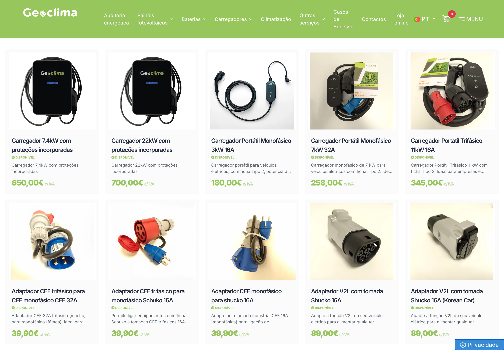

Dar uma volta à loja
Nós procuramos empresas que peguem na nossa atual loja online e lhe dêem uma volta. Qual é o objetivo? Colocá-la a funcionar corretamente.
O objetivo não é cosmético. É a loja a funcionar como deve.
A Paula disse que a loja precisa de uma volta e de um refresh. Antes desta reunião fomos cronometrar o vosso site com um browser real, em desktop e em telemóvel. O que está nesta página são os números que saíram de lá, a razão por que são esses, e o que fica diferente.
4 minutos de leitura. Tudo o que está aqui foi medido em geoclima.pt a 28 de outubro de 2026.
1 O que a Paula pediu
Nós procuramos empresas que peguem na nossa atual loja online e lhe dêem uma volta. Qual é o objetivo? Colocá-la a funcionar corretamente.
O objetivo não é cosmético. É a loja a funcionar como deve.
Precisamos de disponibilizar provavelmente muitos mais produtos que temos, só que não estão aqui, e de saber a melhor forma de estruturar e de a tornar mais atrativa.
Os 29 produtos que estão online não são o catálogo. São o que deu para carregar.
Queremos que aquilo que vendes atualmente, para duplicar, triplicar, quadriplicar.
Por isso esta página fala de velocidade, de estrutura e de catálogo, que é onde a venda online se ganha ou se perde.
2 O que cronometrámos
A pessoa que vê um anúncio vosso, carrega, e fica 20 segundos à espera, não espera. Sai antes de ver o produto. O mais caro é que isto é pior exatamente onde é mais importante: na ficha do carregador, com o preço e o botão de comprar.
E é pior no telemóvel, que é onde a maioria carrega num anúncio.
3 Porque é que acontece
A loja está montada na plataforma Criativatek, com o tema
criativatek-shop-7. Em cada página que a Paula abre, descarregam-se quatro
ficheiros do tema:
| Ficheiro | Tamanho | O que é |
|---|---|---|
vendor.js | 1 269 KB | Todas as bibliotecas do tema num ficheiro só |
style.css | 978 KB | 11 660 blocos de regras, com 6 853 !important |
vendor.css | 689 KB | Estilos das bibliotecas e 15 conjuntos de ícones |
main.js | 173 KB | O código do tema |
mobile.css | 0 KB | Ficheiro vazio, pedido em todos os carregamentos |
| Em cada página | 3 109 KB | Antes de uma só fotografia do produto |
Dentro do vendor.js vêm nove bibliotecas. Fomos contar, uma a uma, quais é
que a página de um carregador usa: o Swiper da galeria, o jQuery e um lightbox. As
outras seis, entre motores de animação, de paralaxe e de galerias, aparecem
zero vezes na página. Descarregam-se na mesma, em todos os carregamentos.
Do Bootstrap usam-se as classes de grelha, mas nenhum dos componentes de JavaScript dele é chamado nesta página.
As 6 853 declarações !important no style.css são o sinal de um
tema que foi sendo forçado por cima de si mesmo. Em termos práticos, significa que
qualquer alteração ao aspeto da loja é difícil, lenta e arrisca partir outra coisa.
A página inicial pede uma imagem chamada demo-corporate-bg-02.png que não
existe no servidor, e devolve erro. É o fundo de demonstração que veio com o template e
nunca foi substituído. Não se vê, mas está lá desde o início.
Isto não é descuido de quem trabalha na Geoclima. É o preço de um tema genérico: traz tudo para servir mil sites diferentes, e o vosso paga o peso dos novecentos e noventa e nove que não são o vosso.
4 Antes e depois
À esquerda, o tempo que medimos hoje no vosso site. À direita, o alvo da loja nova. Carregue para ver as duas a correr.
A barra de cima corre em tempo real medido. A de baixo é o alvo contratado, não uma estimativa otimista: está na tabela em baixo, com o mecanismo ao lado.
| O que se mede | Hoje | Alvo | Como se chega lá |
|---|---|---|---|
| Página de produto completa, computador | 19,5s | menos de 2s | Loja nova sem tema genérico: só o código que a página usa, servido já comprimido |
| Página de produto, telemóvel 3G | 24,7s | menos de 4s | Página entregue já montada e imagens pelo tamanho do ecrã |
| Página inicial, telemóvel 3G | 51,3s | menos de 4s | Os 2,7 MB de fotografias passam a entrar à medida que se desce |
| Código em cada página | 3 109 KB | menos de 250 KB | Sete bibliotecas que não são usadas deixam de ser descarregadas |
| Pedidos ao servidor | 104 | menos de 30 | Um ficheiro de estilo e um de código, em vez de 15 e 39 |
| Produtos na loja | 29 | o catálogo todo | Importação em massa e um painel onde a vossa equipa publica sozinha |
A tabela desliza para o lado para ver a coluna do mecanismo.
Medido a 28 de outubro de 2026 com o Chromium, em computador e em telemóvel simulado com rede 3G e processador a um quarto da velocidade. Os alvos são verificados da mesma forma, à vossa frente, antes de a loja entrar no ar.
5 A loja nova

A vossa lista de produtos, tal como está, a 28 de outubro de 2026. Não é feia: as fotografias são boas e os preços estão claros. O que não tem é pesquisa, filtros por categoria, quantidade e comprar a partir da grelha. Quem quer dois adaptadores tem de abrir duas fichas, e quem procura "22 kW" percorre os 29 produtos com os olhos.
Os 29 produtos, os vossos preços e as vossas fotografias, numa loja com pesquisa, categorias, quantidade e carrinho. Abra e experimente: procure "22 kW", filtre por adaptadores, meta dois no carrinho.
Hoje a loja tem 29 artigos em cinco categorias. Importamos o catálogo completo a partir do que já têm em ficheiro, e fica um painel onde um colaborador vosso cria um produto, carrega as fotografias e a ficha técnica, e publica. Sem pedir a ninguém de fora.
A loja atual não tem pesquisa, não deixa escolher quantidades, e não tem área de cliente. Quem comprou não consegue ver o que comprou, e isso volta tudo ao telefone e ao email da vossa equipa. As três coisas entram.
Na loja de hoje o Kit 4, de 1500 W, custa 889 €, e o Kit 6, de 3500 W, custa 179 €. Mais do dobro da potência por um quinto do preço. Pode ser liquidação de stock, mas quem chega à loja sem saber isso fica sem perceber o que está a comprar. Vale a pena confirmarem, e a loja nova mostra potência e preço na mesma linha para estas coisas saltarem à vista.
Na lista de produtos o único botão é "Detalhes": para meter no carrinho é sempre preciso abrir a ficha. Nos acessórios e adaptadores, que é onde se compram dois e três de uma vez, isso custa vendas. Passa a dar para comprar dali.
O vosso catálogo é tecnicamente exigente. Entre um carregador de 7,4 kW e um de 22 kW, entre ficha Tipo 2 e tomada Schuko, entre CEE trifásico de 32 A e monofásico, há decisões que o cliente não sabe tomar. Hoje a loja mostra os onze produtos lado a lado e deixa a pessoa escolher sozinha. É aí que ela fecha a página, ou liga para perguntar.
Na loja nova, duas perguntas levam a pessoa ao produto certo, com os vossos artigos e os vossos preços. Experimente.
O site tem hoje dois contentores de medição ativos ao mesmo tempo, o que faz contar o mesmo acontecimento duas vezes, e não tem o pixel da Meta instalado. Como os anúncios são feitos por vocês, isso significa que ninguém sabe que anúncio deu que venda. Fica um contentor, com as compras medidas e o pixel a funcionar.
O site está em português, inglês, francês, espanhol e alemão. A página inicial diz ao Google qual versão é qual, mas a lista de produtos e as fichas não dizem nada: zero marcações. As versões da loja competem entre si em vez de cada uma servir o seu mercado, e são elas que têm os produtos para vender.
6 Limites, antes de falarmos de dinheiro
7 Investimento
Na vossa loja, um carregador portátil de 7 kW são 258 € e um de 22 kW são 700 €. A reconstrução paga-se com dez carregadores de 22 kW, ou vinte e cinco dos de 258 €. A Paula quer duplicar as vendas online: é esta a ordem de grandeza da conta.
| Descrição | Valor |
|---|---|
| Reconstrução da loja online Loja e fichas de produto construídas por nós, catálogo completo importado, painel de publicação para a vossa equipa, carrinho e finalização de compra, pesquisa, quantidades e área de cliente, escolha guiada de carregadores, medição de vendas corrigida, idiomas marcados e migração do que já está online. Pagamento único. | 6.500 € |
| Sem IVA | 6.500 € |
| IVA 23% | 1.495 € |
| Total | 7.995 € |
Alojamento e manutenção da loja nova falam-se na reunião: dependem de onde a Geoclima quiser alojar e de quanto quer que fiquemos a acompanhar depois do arranque.
Por aqui, por WhatsApp ou por email. Basta a confirmação do âmbito desta página.
O documento com o âmbito, os alvos de velocidade, os valores e as condições, para assinar.
Enviam-nos o catálogo em ficheiro e indicam a pessoa que valida cada fase.
Manuel Condeço, AI Solutions
964 251 889 ou manuel.condeco@aisolutions.pt